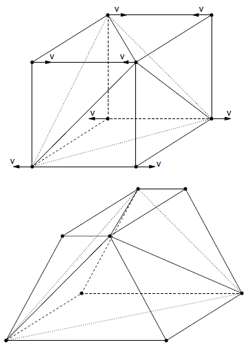
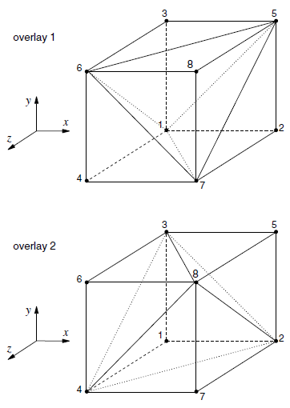

网格离散
在三维常应变率单元中， 四面体的优点是不会产生沙漏变形 （即由节点速度组合产生、不产生应变率因而也不产生节点力增量的变形模式）。 然而，在塑性框架下使用时， 这些单元不能提供足够的变形模式（见 Nagtegaal 等 1974）。 例如，在特定情况下，它们无法像某些重要本构规律所要求的那样在不改变体积的情况下单独变形。 在这些情况下，已知这些单元会表现出比理论预期更刚硬的响应。 为克服该问题，FLAC3D 中采用了混合离散过程。
混合离散技术的原理是通过适当调整四面体应变率张量的第一不变量， 赋予单元更大的体积柔性。[*] 该技术的应用方式取决于物体的初始离散是划分为六面体网格单元还是划分为四面体。 在 Marti 和 Cundall（1982）开创的方法中， 在四面体离散之上叠加较粗的网格单元离散， 某网格单元中特定四面体的第一应变率不变量 按该网格单元内所有四面体的体积平均值计算。 该方法如图 1（Figure 1）所示。 在图中所示的特定变形模式中， 各个常应变率单元将经历与不可压缩塑性流动理论不相容的体积变化。 然而在该示例中，四面体集合（即网格单元）的体积保持不变， 应用混合离散过程可使每个单独的四面体反映网格单元的这一性质， 从而使其行为与理论预测相协调。
六面体网格的混合离散


图 1：混合离散最为有效的变形模式。
在 FLAC3D 中，一个网格单元对应 \(n_t\) 个四面体的集合， 如图 2（Figure 2）中 \(n_t\) = 5 的情形所示。 考虑某一特定网格单元，先估算该单元内局部编号为 \(l\) 的四面体的应变率张量， 再将其分解为偏量和体积部分：
其中 \(η^{[l]}\) 为偏应变率张量， \(ξ^{[l]}\) 为应变率第一不变量，


图 2：一个 8 节点网格单元，含 2 个覆盖层，每层 5 个四面体。
随后网格单元的第一不变量按该单元内所有四面体第一不变量的体积平均值计算：
其中 \(V^{[k]}\) 为四面体 \(k\) 的体积。最后，四面体应变率张量的分量由下式计算
当发生屈服时，剪胀本构规律会产生平均法向应力的变化。 为使技术一致，由施加应变率增量后导出的应力张量第一不变量 也必须按网格单元的体积平均值计算。 在此过程中，先估算某网格单元中特定四面体 \(l\) 的应力张量， 并将其分解为偏量和体积部分：
其中 [\(s\)]\(^{[l]}\) 为偏应力张量， \(σ^{[l]}\) 为平均法向应力。
网格单元第一不变量取其全部四面体的体积加权平均值：
最后，四面体应力率张量分量按以下关系计算：
在 FLAC3D 中，离散过程从较粗的网格开始：先定义网格单元，然后（在内部）离散为四面体。 例如，一个八节点网格单元可离散为两种（且仅两种）不同的五四面体构型 （对应于图 2（Figure 2）中的覆盖层 1 和 2。 节点力的计算（基于应变率和应力的计算） 可使用一个覆盖层或两个覆盖层的组合来进行。 两覆盖层方法的优点是确保对称加载时网格单元的响应对称。 在这种情况下，混合离散在两个覆盖层的组合上进行， 节点力计算通过对两个覆盖层取平均来求得。
四面体网格的节点混合离散
节点混合离散（NMD）是混合离散格式的一种变体， 其中体积行为的平均在节点基础上而不是网格单元基础上进行。 该过程应用于基于三角形或四面体的网格；不需要将单元集合成网格单元。 此外，本构模型照常按单元调用（不像 Bonet 和 Burton 1998 所描述的平均节点压力（ANP）公式表述那样，为体积行为在节点基础上进行调用）。 该过程包括对应变的节点混合离散和对应力的节点混合离散。 下面考虑这两个步骤。
首先回顾 FLAC 和 FLAC3D 中所体现的一般计算序列：
- 根据应力、施加荷载和体积力计算节点力。速度和位移线性变化，单元内应力和应变恒定。
- 应用运动方程，推导新的节点速度和位移。
- 根据节点速度推导单元应变率。
- 利用材料本构关系，由应变率推导新应力。
在 NMD 技术中，该计算序列得到遵循。 然而，如下所述，对应力执行了一个平均过程（第 4 步结束时）。
首先，体积应力 \(\sigma\) 的节点值按周围单元值的加权平均计算：
其中 \(m_n\) 为节点 \(n\) 周围的单元，\(V_e\) 为单元 \(e\) 的体积。 在得到节点值 \(\sigma_n\) 之后， 通过对节点值取平均计算单元 \(\bar{\sigma}\) 的平均值：
其中对于 FLAC 中的三角形该值为 3，对于 FLAC3D 中的四面体 \(d\) = 4。
最后，通过在返回值中用 \(\bar{\sigma}\) 代替 \(\sigma\)， 对本构模型计算出的应力进行修正：
需要注意的是，NMD 技术中涉及的平均处理 与本构模型的公式表述无关， 后者不受影响。
此外，由于平均过程的执行方式， 所得的四面体公式表述在 \(\sigma\) 均匀（因而对所有单元相等）的分片试验情形中给出正确的行为。
NMD 的节点平均过程，消除了线性速度单元过度约束的运动学条件。
| [*] | 该不变量用于衡量常应变率四面体的膨胀速率。 |
| 这些内容对您有帮助吗？… | FLAC3D © 2019, Itasca | 原文更新于 2020 年 10 月 8 日 |
| 版权与免责声明 | ||